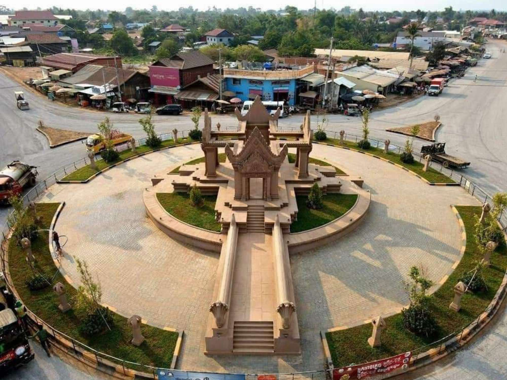

ការពិពណ៏នាអំពី ខេត្តនីមួយៗនៅក្នងប្រទេសកម្ពុជា
ទំព័រដើម
តាកែវ
ភ្នំពេញ
កែប
ព្រះសីហនុ
ស្វាយរៀង
កំពង់ធំ
បាត់ដំបង
ពោធ៏សាត់
សៀមរាប
រតនគីរី
មណ្ឌលគីរី
ក្រចេះ
ត្បូងឃ្មុំ
កំពង់ចាម
ព្រៃវែង
កណ្តាល
ឧត្តរមានជ័យ
កំពង់ឆ្នាំង
កំពង់ស្ពឺ
បន្ទាយមានជ័យ
កោះកុង
ប៉ៃលិន
កំពត
ស្ទឹងត្រែង
ព្រះវិហារ
ទំនាក់ទំនង
ខេត្តព្រះវិហារ

ព័ត៌មានសង្ខេបអំពីខេត្តព្រះវិហារ
> ខេត្តព្រះវិហារ គឺជាខេត្តដែលស្ថិតនៅភាគខាងជើងបំផុតនៃប្រទេសកម្ពុជា ខេត្តនេះមានផ្ទៃដីធំជាងគេលំដាប់ទី២ និងមានប្រជាជនរស់នៅតិចនៅតំបន់ភ្នំ និងខ្ពង់រាប ដែលជាខេត្តមានលក្ខណៈវប្បធម៌ប្រវត្តិសាស្ត្រនិងធម្មជាតិ ។ នៅភាគខាងជើងនៃខេត្តជាប់នឹងប្រទេសថៃនិងឡាវ ដែលបង្កើតជាច្រកអន្តរជាតិសម្រាប់ពាណិជ្ជកម្មនិងទេសចរណ៍។ ខេត្តព្រះវិហារ គឺជាតំំបន់មួយនៅភាគខាងជើងនៃកម្ពុជាដែលអាចទាក់ទាញភ្ងៀរជាតិនិងអន្តរជាតិជាច្រើនសម្រាប់មកទស្សនាប្រាសាទបុរាណ និងទេសភាពព្រៃធម្មជាតិ រីឯទីរួមខេត្តព្រះវិហារគឺ ក្រុងព្រះវិហារ។
> ខេត្តព្រះវិហារស្ថិតនៅក្នុងភូមិសាស្រ្តទិសឧត្តរនៃព្រះរាជាណាចក្រកម្ពុជា ដែលមានចម្ងាយពីរាជធានីភ្នំពេញ ប្រមាណចំងាយ ២៩៤គីឡូម៉ែត្រ ជាខេត្តស្ថិតនៅតំបន់ខ្ពង់រាប តំបន់ព្រៃភ្នំ ភូមិសាស្ត្រដែលមានភាពទូលាយ សំបូរព្រៃឈើធំៗជាជំរកសត្វព្រៃគ្រប់ប្រភេទ រ៉ែ ធនធានធម្មជាតិ និងសំនង់ប្រវត្តិសាស្ត្រ ប្រាសាទបុរាណ។ ព្រំប្រទល់ខាងជើងទល់នឹងប្រទេសថៃ និងប្រទេសឡាវ ប៉ែកខាងត្បូងទល់នឹងខេត្តកំពង់ធំ ប៉ែកខាងលិចទល់នឹង ខេត្តសៀមរាប និងឧត្តរមានជ័យ ប៉ែកខាងកើតទល់នឹង ខេត្តស្ទឹងត្រែង។ ខេត្តព្រះវិហារមានផ្ទៃដីសរុប ១៣.៧៨៨ គីឡូម៉ែត្រការ៉េ ក្នុងនោះផ្ទៃដីបង្ករបង្កើនផលមានចំនួន ៣០.០០០ហិចតា និងមានចំនួន៨៥%ជាព្រៃឈើ។ ខេត្តចែកចេញជា ៧ស្រុកក្រុងរួមមាន ៤៧ឃុំដែលមានភូមិសរុប ២០៨ភូមិ និងសង្កាត់មាន២។ ប្រជាពលរដ្ឋនៅខេត្តព្រះវិហារភាគច្រើនជាជនជាតិខ្មែរនិងមានជនជាតិភាគតិច កួយ មានប្រមាណ២០% មានរបរធ្វើស្រែចម្ការ រកជ័រ រកវល្លិ៍ លក់ដូរ និងនេសាទត្រីបន្តិចបន្តួច។ ការងារធ្វើស្រែចំការពុំសូវទទួលបានទិន្នផលខ្ពស់ឡើយ ព្រោះដោយបងប្អូនធ្វើតាមរបៀបអភិរក្សនិយម គឺធ្វើស្រែប្រវាស់មេឃ។
> ខេត្តព្រះវិហារមានចំនួនស្រុកសរុបជា ៧ ស្រុក :
- ស្រុកជំរឿន
- ស្រុកសង្គមថ្ម
- ស្រុកជ័យសែន
- ស្រុកខ្ទុំលាំង
- ស្រុកព្រះវិហារ
- ស្រុករវៀង
- ស្រុកស្រយ៉ង់